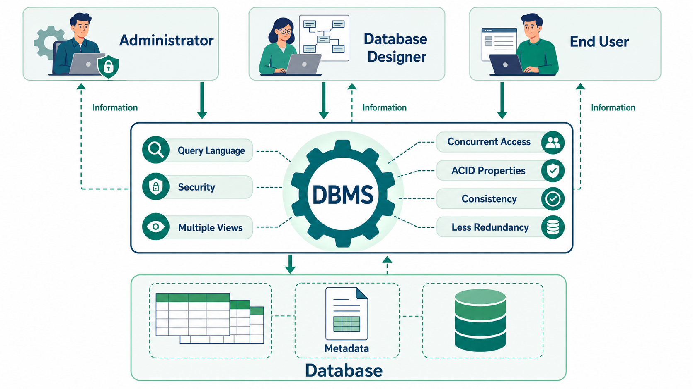

Perfect. This is one of the most important chapters for IBPS SO IT because it builds the foundation for everything else (ER Model, Keys, SQL, Normalization, Transactions, etc.).
I'll explain every line in simple language, with real-life examples, exam tricks, and important IBPS points.
DBMS - Overview
What is Data?
The book says:
Data is a collection of facts and figures.
Simple Meaning
Data is raw information that has no meaning by itself.
Example
Suppose a teacher has marks of students.
80
92
67
75
90These numbers are just data.
You don't know
- whose marks they are
- who topped
- what the average is
So this is only raw data.
What is Information?
When data is processed to produce a meaningful result, it becomes Information.
Example
Data
80
92
67
75
90After processing,
Highest Marks = 92
Average = 80.8
Topper = RahulNow it has meaning.
This is Information.
IBPS Shortcut
| Data | Information |
|---|---|
| Raw facts | Processed data |
| No meaning | Meaningful |
| Input | Output |
Exam Question
Data processed into meaningful form is called?
✅ Information
What is Database?
Book says
Database is a collection of related data.
Simple Meaning
A database stores related information together.
Example
Student Database
| Roll | Name | Marks |
|---|---|---|
| 101 | Rahul | 90 |
| 102 | Aman | 80 |
Everything related to students is stored together.
This collection is called a Database.
What is DBMS?
Book says
DBMS stores data in such a way that it becomes easier to retrieve, manipulate and produce information.
Let's understand every word.
Retrieve
Means
Get data
Example
Find Rahul's marks.
Manipulate
Means
Change data.
Example
Rahul Marks = 90
↓
Update
Rahul Marks = 95Produce Information
Example
Teacher asks
"Who scored above 90?"
DBMS immediately gives the answer.
Why DBMS was introduced?
Earlier people used File System.
Example
student.txt
teacher.txt
fees.txtEverything was stored in separate files.
Problems
❌ Duplicate data
❌ Difficult search
❌ No security
❌ Data inconsistency
❌ Slow
DBMS solved these problems.
Characteristics of DBMS
There are 10 important characteristics mentioned here.
1. Real-world Entity
Book says
DBMS uses real-world entities.
What is an Entity?
Entity means
Any real-world object.
Examples
- Student
- Teacher
- Customer
- Employee
- Bank Account
All these are entities.
Attribute
Each entity has properties.
Example
Student
Attributes
- Name
- Roll No
- Age
- Phone Number
Think like this
Student
|
-------------------
| Name
| Age
| Roll
| PhoneStudent = Entity
Name, Age = Attributes
Real-Life Example
Facebook Database
Entity
UserAttributes
Name
Email
Password
DOB
Profile PictureIBPS Trick
Entity = Noun
Attribute = Property of noun
2. Relation-based Tables
Book says
DBMS stores entities and their relationships as tables.
Example
Student Table
| StudentID | Name |
|---|---|
| 1 | Rahul |
Course Table
| CourseID | Course |
|---|---|
| 101 | DBMS |
Enrollment Table
| StudentID | CourseID |
|---|---|
| 1 | 101 |
These tables are related.
Hence,
Relational Database
Why useful?
Even if you know only the table names
Student
Course
Teacher
MarksYou can easily understand the database.
3. Isolation of Data and Application
This confuses many students.
Let's understand carefully.
Imagine WhatsApp.
WhatsApp App
↓
DatabaseThe app and the database are separate.
The application only asks
Give Rahul's messages.Database finds them.
The app doesn't know where they are stored.
This separation is called
Isolation of Data and Application
Active vs Passive
Book says
Database is Active
Data is Passive
What does that mean?
Think of a Library.
Books
↓
just lying there
They don't do anything.
They are passive.
Librarian
↓
Organizes
Finds books
Maintains books
The librarian is active.
Similarly,
Data = Passive
DBMS = ActiveDBMS organizes data.
Metadata
Book says
DBMS stores metadata.
Metadata means
Data about Data
Example
Student Table
Roll Number
INTEGERName
VARCHAR(50)DOB
DATEThis information describes the data.
Therefore,
Metadata.
Easy Definition
Metadata tells
- Column name
- Data type
- Size
- Constraints
Exam Question
Metadata means
✅ Data about Data
4. Less Redundancy
Redundancy means
Duplicate data.
Example
Bad Table
| Roll | Student | Department |
|---|---|---|
| 1 | Rahul | IT |
| 2 | Aman | IT |
| 3 | Priya | IT |
Notice
IT
IT
IT
Again and again.
This is redundancy.
Solution
Normalization
Student Table
| Roll | Name | DeptID |
|---|---|---|
| 1 | Rahul | 1 |
| 2 | Aman | 1 |
Department Table
| DeptID | Department |
|---|---|
| 1 | IT |
Now
IT appears only once.
IBPS Trick
Normalization
↓
Reduces Redundancy
5. Consistency
Book says
Database should always remain consistent.
Meaning
Data should always remain correct.
Example
Rahul
₹10,000
Transfers ₹2000
Correct
Rahul = 8000
Aman = 2000Wrong
Rahul = 8000
Aman = 0Money disappeared.
Database became inconsistent.
DBMS prevents this.
6. Query Language
DBMS uses SQL.
SQL allows
Search
Insert
Update
Delete
Example
Find all students
SELECT * FROM Student;Update marks
UPDATE Student
SET Marks=95
WHERE Roll=1;Without SQL
Searching millions of records would be difficult.
7. ACID Properties
Very Important
These apply to
Transactions
What is Transaction?
A transaction is a group of database operations that should be treated as one logical unit of work.
Example:
When you transfer ₹1000 from Account A to Account B:
- Deduct ₹1000 from A.
- Add ₹1000 to B.
Both steps together form one transaction.
A → Atomicity
All or Nothing.
Example
Transfer ₹1000
If deduction succeeds
Addition must also succeed.
Otherwise
Everything is cancelled.
C → Consistency
Database should always remain valid.
Money before
₹15000
Money after
₹15000
Nothing should disappear.
I → Isolation
Suppose
Two ATMs
Access same account.
They should not interfere with each other.
Each transaction works independently.
D → Durability
Suppose
Transaction completed.
Immediately power goes off.
After restart
Money should still be transferred.
That is Durability.
Easy Trick
| Letter | Remember |
|---|---|
| A | All or Nothing |
| C | Correct Data |
| I | Independent Transactions |
| D | Permanent Data |
8. Multiuser and Concurrent Access
Suppose
Amazon
10 lakh users
All shopping together.
Can the database handle it?
Yes.
This is
Multiuser support.
Concurrent means
At the same time.
Many users
↓
Same database
↓
Simultaneously.
DBMS manages everything.
Important Point
Book says
Users don't even know restrictions are happening internally.
Meaning
DBMS automatically handles conflicts.
9. Multiple Views
Every user doesn't need to see everything.
Example
Hospital
Doctor
↓
Patient History
Receptionist
↓
Patient Name
Cashier
↓
Billing
Everyone sees
Different view
Same database.
Another example
Company
HR
↓
Salary
Employee
↓
Own Profile
Manager
↓
Attendance
Same database
Different views.
10. Security
Security means
Only authorized users can access data.
Example
Sales Department
Can see
Sales Data
Cannot see
Purchase Data
Admin
Can see everything.
Student
Can only view marks.
Teacher
Can update marks.
Book also says
DBMS allows constraints.
Meaning
Rules.
Example
Age cannot be
-5Marks cannot be
150DBMS prevents invalid entries.

Users of DBMS
Different people use the database differently.
There are 3 major users.
1. Administrator (DBA)
DBA = Database Administrator
Think of the DBA as the Principal of a school.
They don't enter marks every day, but they manage the whole system.
Responsibilities
- Install DBMS
- Create users
- Give permissions
- Backup database
- Recover lost data
- Manage security
- Manage hardware/software resources
- Maintain licenses
- Monitor performance
Example
A new employee joins a bank.
DBA creates their database account and decides what they can access.
IBPS Tip: The DBA is responsible for security, backup, recovery, user management, and overall database maintenance.
2. Designers (Database Designers)
These people design the database before it is created.
They decide:
- What tables are needed?
- What data should be stored?
- What relationships exist?
- Which keys should be used?
- What constraints should apply?
Example
For a College Database, a designer decides to create tables like:
- Student
- Teacher
- Course
- Enrollment
and defines how they relate.
Think of them as architects who prepare the blueprint before constructing a building.
3. End Users
These are the people who actually use the database.
Examples:
- Bank employees
- Students checking marks
- Customers shopping on Amazon
- Business analysts generating reports
They usually retrieve or update data without worrying about how the database is implemented.
Quick Comparison of DBMS Users
| User | Main Work |
|---|---|
| Administrator (DBA) | Manages and secures the database, creates users, backups, recovery |
| Designer | Designs database structure, tables, relationships, constraints |
| End User | Uses the database to view, insert, update, or analyze data |
⭐ IBPS SO IT One-Page Revision
| Topic | Key Point |
|---|---|
| Data | Raw facts |
| Information | Processed data |
| Database | Collection of related data |
| DBMS | Software to store, retrieve, update, and manage data |
| Entity | Real-world object (Student, Employee) |
| Attribute | Property of an entity (Name, Age) |
| Metadata | Data about data |
| Redundancy | Duplicate data |
| Normalization | Reduces redundancy |
| Consistency | Database remains correct and valid |
| SQL | Query language used to access DBMS |
| Transaction | A group of database operations treated as one unit of work |
| ACID | Atomicity, Consistency, Isolation, Durability |
| Concurrent Access | Multiple users accessing the database simultaneously |
| Multiple Views | Different users see different parts of the same database |
| Security | Access control, permissions, constraints |
| DBA | Manages and maintains the database |
| Designer | Designs the database structure |
| End User | Uses the database for daily work |
🎯 IBPS SO IT Exam Focus
From this chapter, IBPS commonly asks direct conceptual questions like:
- What is the difference between Data and Information?
- What is Metadata?
- Which process reduces redundancy? (Normalization)
- What is a Transaction?
- Expand ACID and identify each property's purpose.
- Who is responsible for backup and recovery? (DBA)
- What is the role of a Database Designer?
- What is meant by Multiple Views and Concurrent Access?
Master these basics first—they are repeatedly used in later DBMS topics such as Architecture, ER Model, Keys, Normalization, SQL, Transactions, and Concurrency Control.